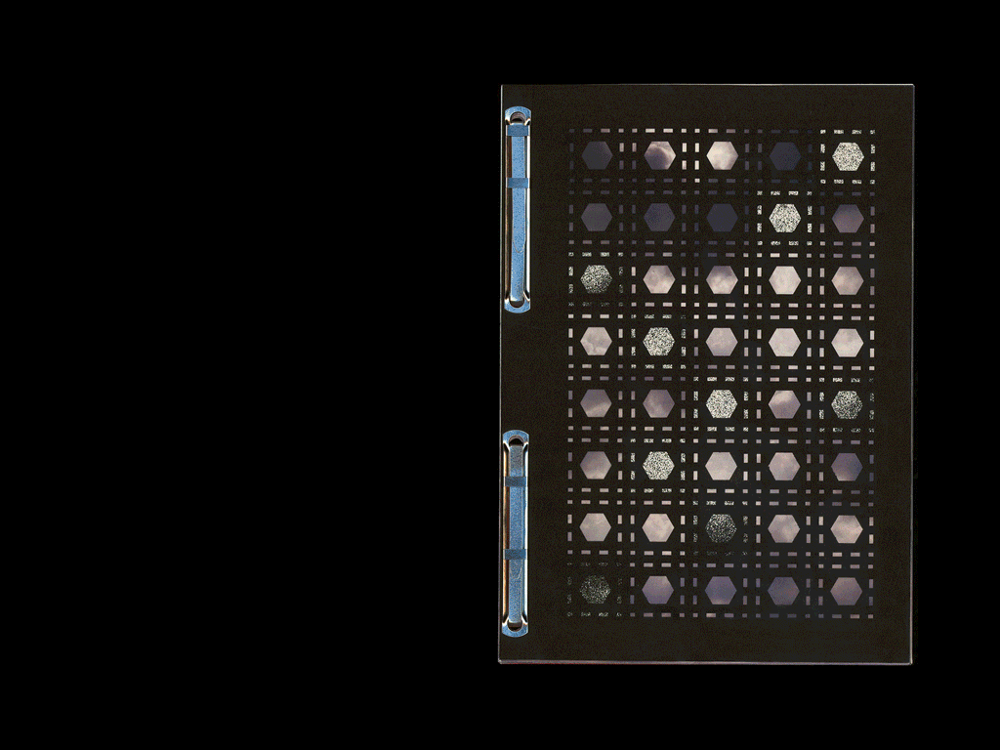
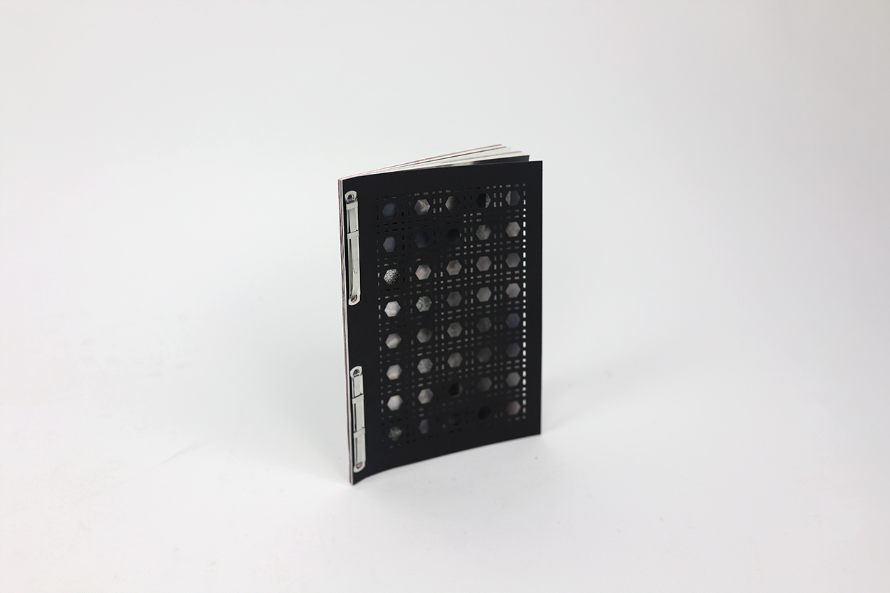
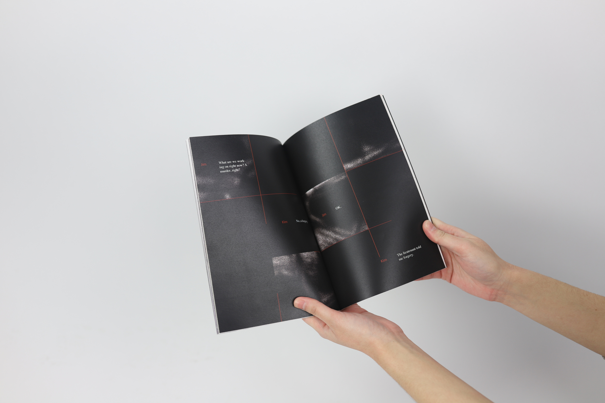
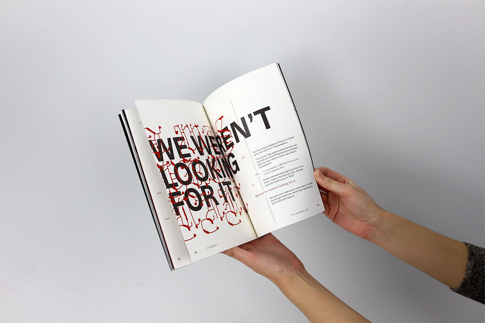
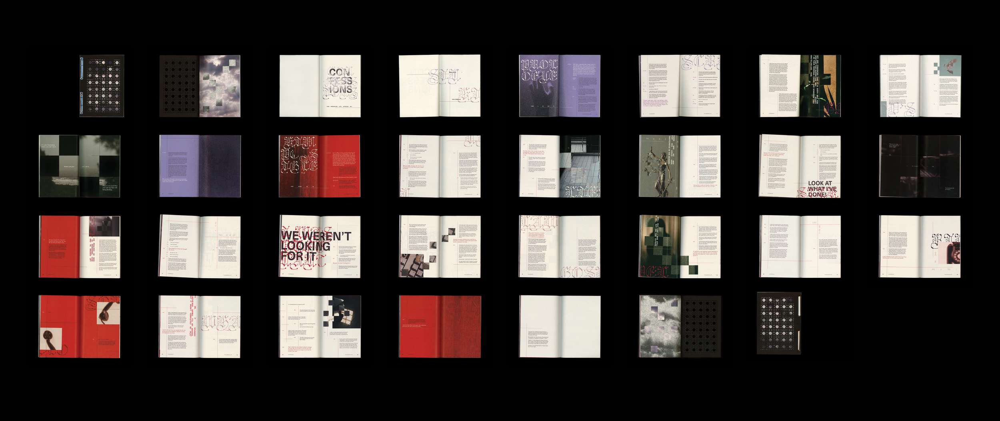

Book Design
11/23–12/23 (4 weeks)
Amy Auman
This book is a visual experience of the This American Life podcast episode, “Confessions”. The story focuses on the scrupulous confessions heard by a Catholic priest and the false confession of a young woman along with its fallout.
You can find more insight into my process here and a closer look of the book here
Catholicism extends to the size of the piece, which uses the common dimensions of a Bible. The use of prongs is a reference to the legal system which is prevalent in the second section of the book.



I featured with images slightly and strategically blocked out by hazy squares featuring the same image to communicate the muddied hearsay over the truth. I played with a funky display typeface over a bold sans serif to show the hostility of the circumstances. Color also played a deliberate role in the system with the first section colored purple to represent penance and the second half colored red to signify sacrifice.

this website was coded by krissy ♥, last updated March 2026